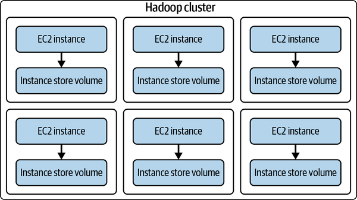

Distributed (cloud) computing#
This document covers the key elements for modern distributed computing, specifically a word on Hadoop and Spark.
Separation of compute from storage#
Traditionally compute and storage are colocated, e.g.,
a transactional database leverages its low-latency disk reads and high bandwidth.
even for distributed jobs, a map job locates the location of data and runs the map local to the data.
Then why separate compute and storage?
Availability of cloud computing and storage purchase
Cost: It is cheap to buy and host a server than to rent if the server is up 24/7, minus maintenance cost
Towards ephermerality: (what we have done so far) Spin up an instance, use, and stop when done.
Towards scalability: If you only need to run this titan job once a month, only pay for the resources then.
Data durability and availability
Fault tolerance: Replication of data increases availability and mitgates a write operation that destroys data.
Hybridization of separation and colocation#
In reality, compute and storage are not either separated or colocated, e.g.,
AWS elastic mapreduce (EMR) and S3
Spark infrastructure dependence on RAM
 |
|---|
Instances as a processing cache in an ephemeral Hadoop cluster, Fig 6.7 from Reis (2022). |
Hadoop#
Developed in 2006 to process data with the MapReduce programming model (Dean and Ghemawat, 2008), with the “big data” processing idea.
Turned into an Apache project in 2008.
Main components of Apache Hadoop:
Hadoop Distributed File System (HDFS): Manages large data sets running on commodity hardware (with data replication)
Yet Another Resource Negotiator (YARN)
Hadoop MapReduce: Splits data into blocks, distributes across different nodes, then runs task on each block in parallel
Hadoop Common (Hadoop Core): Common libraries and utilities
Why Hadoop is not enough?
Hadoop utilizes external storage. Read/write latency is high.
All codes must be restricted to a
mapandreduceconstructs.
Spark#
Spark was originally created at UC Berkeley’s AMPLab in 2009 and open-sourced in 2010.
Spark became an Apache project in 2013.
Main components of Apache Spark:
Spark Core: Execution engine for resource coordination
Spark SQL
Machine Learning Library (MLlib)
Spark Streaming: Capability for processing streaming data
GraphX: Capability for processing graph-based data
Spark essentially tackles only where Hadoop does not perform well, by using an in-memory distributed computing engine.
Spark:
makes use of Resilient Distributed Dataset (RDD)
employs dynamic RAM in processing
Comparison of Hadoop and Spark (adapted from AWS summary)#
Hadoop |
Spark |
|
|---|---|---|
Architecture |
stores and processes data on external storage |
stores and process data on internal memory |
Performance |
processes data in batches |
processes data in real time |
Cost |
relatively affordable |
comparatively more expensive |
Scalability |
easily scalable |
comparatively more challenging |
Machine learning |
needs to integrate with external libraries |
built-in machine learning libraries |
Security |
strong security features, storage encryption, and access control |
basic security |
MapReduce (Dean and Ghemawat, 2008)#
|
|---|
MapReduce schema from Tian et. al (2015). |

References#
Reis, J., & Housley, M. (2022). Fundamentals of data engineering. O’Reilly Media, Inc.
Dean, J., & Ghemawat, S. (2008). MapReduce: simplified data processing on large clusters. Communications of the ACM, 51(1), 107-113.
Tian, W., & Yong, Z. (2015). Energy efficiency scheduling in hadoop, Optim. Cloud Resour. Manag. Sched, 179-204.